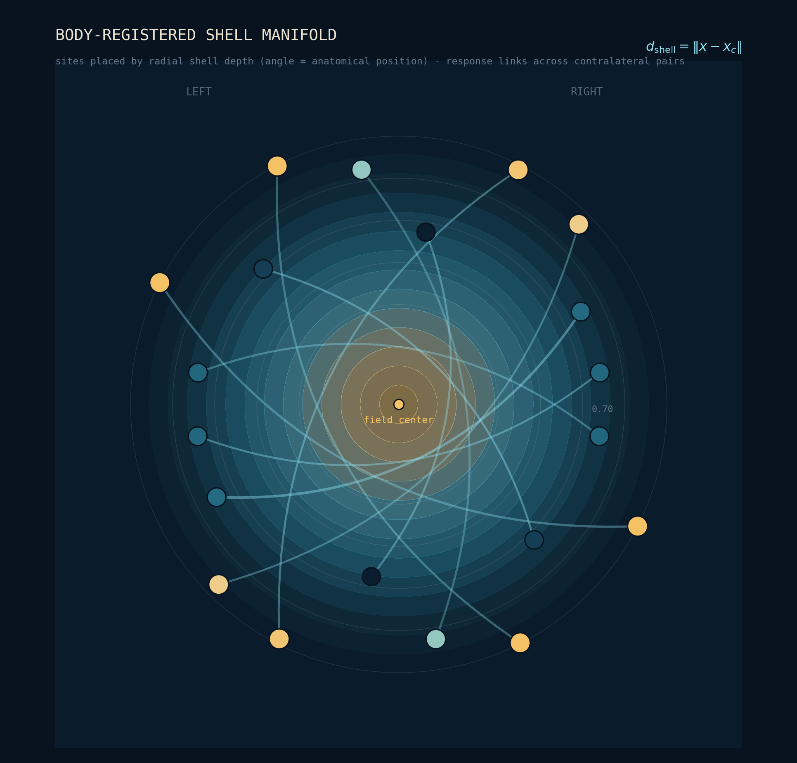

The Platform · QPCI
QPCI — Quantum Phase-Coherence Imaging — is a single measurement architecture that runs identically from a smartphone to a hospital-grade quantum-sensor array. Same mathematics. Same packets and provenance, different granularity.
Phase-coherence imaging
The method is simple to state. Apply a controlled perturbation to the body — a stimulus that is characterized and witnessed the instant it is delivered — and record the response simultaneously at many distributed sites, every channel resolved against one shared timebase.
What carries the information is timing, not amplitude. From each site we recover a complex response — how much, and how far ahead or behind — and from the pairings between sites, left against right and level against level, we reconstruct the phase-coherence topology: a calibrated map of how a distributed living system stays coordinated with itself. The perturbation is the point — by comparing the coordination the body holds under drive against its own baseline, the reading measures how that organization deforms, often before any single level looks abnormal. Because the stimulus, the clock, and every response are witnessed and sealed, the whole measurement replays from the raw record.

The architecture
The same pipeline runs on every instrument — from the witnessed drive stimulus to a sealed, witness-qualified packet that carries its own provenance. Change the hardware and the signal quality changes with it; the mathematics and the packet format do not.
A high-level view. The full eleven-layer specification is documented in the technical brief, available to qualified partners on request.
The instruments
One modality, three instruments — each reading the same phase-coherence topology at a different depth of evidence.
01 · DRTT
Distributed Real-Time Topology turns your ordinary iPhone into a research-grade instrument — the torch delivers the controlled stimulus, the camera records the multi-site response. No accessory required.
Shipping02 · Rev B BWI
A battery-isolated Boundary Witness Instrument that adds a directly witnessed source — closing the measurement to real physical units across multiple body nodes.
Prototype · late 202603 · QPCI
A hospital-grade, multimodal array — quantum diamond magnetometry, electrical impedance tomography, EEG and optical redox — fused on one master clock.
In developmentDRTT already powers the imaging work behind Membrane Health. Because every instrument writes the same packet, a reading taken on a phone and a reading taken in a lab are the same kind of object — comparable, replayable, and honest about their evidence.
The full architecture — adjudication predicates, closure classifications, packet schemas, and hardware specifications — is available to qualified partners, clinicians, and investors. Request the technical brief.